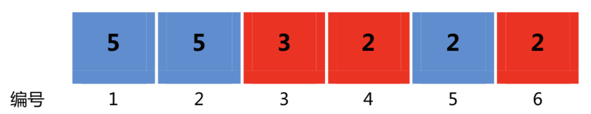

一条狭长的纸带被均匀划分出了n个格子，格子编号从1到n。每个格子上都染了一种颜色$𝑐𝑜𝑙𝑜𝑟_𝑖$（用[1，m]当中的一个整数表示），并且写了一个数字$𝑛𝑢𝑚𝑏𝑒𝑟_𝑖$。

定义一种特殊的三元组：(x, y, z)，其中x，y，z都代表纸带上格子的编号，这里的三元组要求满足以下两个条件：
满足上述条件的三元组的分数规定为$(x + z) ∗ (𝑛𝑢𝑚𝑏𝑒𝑟_𝑥+ 𝑛𝑢𝑚𝑏𝑒𝑟_𝑧)$。整个纸带的分数规定为所有满足条件的三元组的分数的和。这个分数可能会很大，你只要输出整个纸带的分数除以10,007所得的余数即可。
第一行是用一个空格隔开的两个正整数$𝑛$和$𝑚$，$𝑛$代表纸带上格子的个数，$𝑚$代表纸带上颜色的种类数。
第二行有$𝑛$个用空格隔开的正整数，第$𝑖$个数字$𝑛𝑢𝑚𝑏𝑒𝑟_𝑖$代表纸带上编号为$𝑖$的格子上面写的数字。
第三行有$𝑛$个用空格隔开的正整数，第$𝑖$个数字$𝑐𝑜𝑙𝑜𝑟_𝑖$代表纸带上编号为$𝑖$的格子染的颜色。
共一行，一个整数，表示所求的纸带分数除以10,007所得的余数。
6 2 5 5 3 2 2 2 2 2 1 1 2 1
82
15 4 5 10 8 2 2 2 9 9 7 7 5 6 4 2 4 2 2 3 3 4 3 3 2 4 4 4 4 1 1 1
1388
【输入输出样例1说明】纸带如题目描述中的图所示。所有满足条件的三元组为：(1, 3, 5), (4, 5, 6)。所以纸带的分数为(1 + 5) ∗ (5 + 2) + (4 + 6) ∗ (2 + 2) = 42 + 40 = 82。
【数据说明】对于第1组至第2组数据，$1 ≤ 𝑛 ≤ 100, 1 ≤ 𝑚 ≤ 5$;对于第3组至第4组数据，$1 ≤ 𝑛 ≤ 3000, 1 ≤ 𝑚 ≤ 100$;对于第5组至第6组数据，$1 ≤ 𝑛 ≤ 100000, 1 ≤ 𝑚 ≤ 100000$，且不存在出现次数超过20的颜色;对于全部10组数据，$1≤𝑛≤100000,1≤𝑚≤100000,1≤𝑐𝑜𝑙𝑜𝑟_𝑖≤𝑚,1≤𝑛𝑢𝑚𝑏𝑒𝑟_𝑖≤ 100000$。
 Comet OJ
Comet OJ